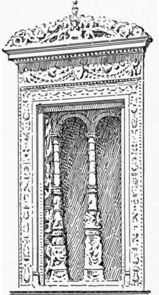
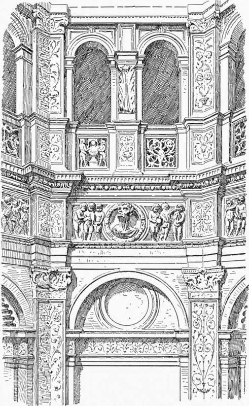
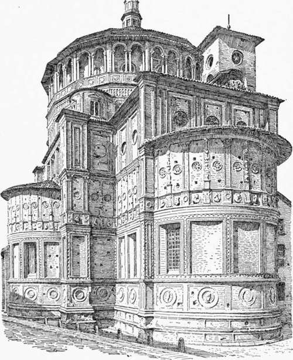

Church Architecture Of The Renaissance In North Italy. Part 2
Description
This section is from the book "Character Of Renaissance Architecture", by Charles Herbert Moore. Also available from Amazon: Character of Renaissance Architecture.
Church Architecture Of The Renaissance In North Italy. Part 2
A characteristic early example of this Northern Renaissance design in its most florid form is the well-known fagade of the church of the Certosa of Pavia, dating from the close of the fifteenth century. The effect of this front is in its larger parts much like that of a late mediaeval Italian one, but the details are pseudo-classic with strange admixture of mediaeval elements. The general scheme is a reproduction of the pseudo-Gothic fagade of the neighbouring cathedral of Milan, having nearly the same general proportions, and being divided into five bays by deep buttresses. The steep gable, however, which in Milan embraces the whole front, is omitted, and in its stead a horizontal cornice crowns the three central bays, and this, together with the strongly marked horizontal lines below, greatly modifies the general effect of the composition. In the smaller details there is no likeness between the two fagades, that of Pavia showing a survival of Lombard Romanesque forms with the pseudo-classic elements ingrafted on them. A prominent feature of the Lombard Romanesque architecture is the diminutive open arcade. This feature is extensively-employed in the mediaeval portions of the church to which this facade is the western enclosure, and it is reproduced, with neo-classic modifications, at the top of each of the two principal stages into which the fagade is divided. The arches are here carried on small piers, and are framed with diminutive pilasters and entablatures. The portal has a pair of free-standing Corinthian columns on each side, bearing a ressaut of an entablature which spans the opening, and from these ressauts an arch is sprung with spandrels in relief crowned with a classic cornice. In each one of the other bays of the ground story a rectangular window, with classic mouldings and a cornice of classic profile, is subdivided in the mediaeval manner with two small arches on a central column and jamb shafts. These last have a tapering form, with a profusion of carved ornament in high relief, and are like the shafts of candelabra (Fig. 78). The mediaeval feature of a large circular opening over the central portal is enclosed within a rectangle surmounted by an entablature and a classic pediment, while this compound is flanked on either side by a pair of arches opening beneath a larger arch. To all this mixture of Romanesque and neo-classic features a pseudo-Gothic character is superadded by statues set in niches of the buttresses, and spiky pinnacles over the lateral bays. The details of this overelaborate composition, the work of several successive architects, have no merit in themselves, and the work as a whole is trivial and unmeaning.
Fig. 78. — Certosa of Pavia.
Among the monuments of the early Renaissance in Milan are several of importance, and of these the church and sacristy of San Satiro are of special interest because they are said to have been designed by Bramante.1
The church bears, I think, unmistakable marks of Bramante's authorship, being a reflection on a reduced scale of St. Andrea of Mantua by Alberti, which there is every reason to believe had been studied and admired by Bramante during his travels in the north for improvement in his art, and a foreshadowing of the great scheme which he subsequently prepared for St. Peter's in Rome. Like St. Andrea, it has a barrel-vaulted nave and transept, with a dome on pendentives over the crossing. The aisles have groined vaulting, and the piers are square and are faced with pilasters. The dome is raised on a very low drum moulded in stucco into the form of an entablature, and the vault surfaces are elaborately coffered in stucco. The church has no eastern arm, since a wall with a much-venerated painting of the Virgin is said to have stood so near the site that space for such an arm could not be had without demolishing it; and as this was not to be thought of, Bramante made a semblance of an eastern arm in the form of a sunk panel with splayed sides, on which he wrought in stucco relief the elaborate perspective which is so noticeable a feature of the interior.
The sacristy (Fig. 79) was built immediately after the church, in the form of an octagon about eight metres in diameter. It is covered with an octagonal dome lighted by a circular opening in each of its sides just above the springing level. The walls of the interior are divided into two stages, the lower one having segmental niches alternating with shallow rectangular recesses, one on each side of the polygon except that of the entrance, while the stage above has a gallery, like a triforium, in the thickness of the wall, with a pair of round-arched openings in each bay. The dome is enclosed within a drum of brick which is covered by a low-pitched timber roof.
Fig. 79. — Sacristy of San Satiro.
1 Cf. Casati, I Capi d' Arte di Bramante da Urbino nel Milanese, Milan, 1870, p. 24 et seq. That the design of San Satiro was made by Bramante, Casati gives the evidence of a document printed in the year 1500 by the deputies of the church in which it is said, "... Come vi si diede principio dopo P anno 1470 con disegno del celebre Bramante.'1" And he finds further confirmation of Bramante's authorship in a commentary on Vitruvius by Cesare Cesariano, printed in Como in 1521, where this author states that the church and sacristy of San Satiro were designed by his preceptor, Donato of Urbino, called Bramante.
The ornamental details of the interior are all of stucco, and consist of two superimposed false orders of pilasters set in the angles, and broken on plan so as to fit them, the entablature of each order having a ressaut over each pilaster, and the surfaces of the friezes and pilasters being profusely enriched with ornaments in relief. But these details are said to have been extensively worked over in later times, so that it is doubtful whether any correct idea of the original character of this interior can now be formed, except as to its larger features.
The monument is a diminutive adaptation, in simplified form, of a local mediaeval type of building of which San Vitale of Ravenna appears to have been the original example, and San Lorenzo of Milan an offshoot. There are points of similarity between the sacristy of San Satiro and the church of the Consolazione of Todi (Fig. 36, p. 76) that go far to determine their common authorship. The superimposed pilasters broken into the angles of a polygon, the niches in the lower bays, and the ribs on the surfaces of the vault rising from the pilasters 1 are similar in both.
A curious domed structure of the early Renaissance in Milan is the east end of the church of Santa Maria delle Grazie. The dome is hemispherical, and is raised on a drum resting on pendentives over a square area. The most noticeable part of the composition is the exterior, which completely masks the inside. The drum (Fig. 80) is a polygon of sixteen sides, and is in two stages, the lower one of which is solid, and rises above the springing of the vault, while the upper stage, in the form of an open arcaded gallery, with an attic in retreat, reaches far above the haunch of the dome which is covered with a low-pitched roof of timber crowned with a lantern. The lower stage has an order of pilasters with a nondescript entablature, having an enormously high frieze ornamented with an engaged balustrade. A pair of square-headed windows with mullions, surmounted with pediments, opens through each face of the polygon, except the four which fall over the piers of the interior. Against each of these sides a turret rises, forming an abutment. A panelled podium crowns the entablature of this lower stage, and upon it the shafted arcade of the top story rests. The north and south sides of the square beneath have each a low apse, while on the east is a rectangular choir with an apse like the other two.
Fig. 80. — Santa Maria delle Grazie.
The architectural treatment of this exterior is not expressive of the inside. The square parts are divided into four stages answering to nothing within, and the lower three of these stages are carried around the apses. The wall surfaces are broken into rectangular panellings by mouldings and pilasters, every alternate pilaster in the third stage having a tapering ornamental member, like the window shafts of the Certosa of Pavia, worked in relief on its face ; and the panels are adorned with disks and medallions. Like most of the early Renaissance architecture of Milan; this building is entirely of brick with ornaments of terra-cotta.
1 Salient ribs of stucco are carried up in the angles of the dome of the sacristy as they are in the vaulting of the apses of Todi.
Continue to:
- prev: Chapter VIII. Church Architecture Of The Renaissance In North Italy
- Table of Contents
- next: Church Architecture Of The Renaissance In North Italy. Part 3